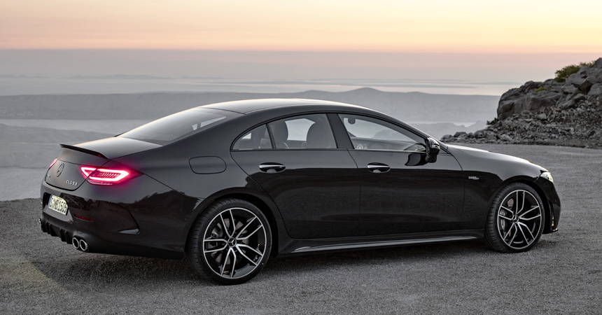
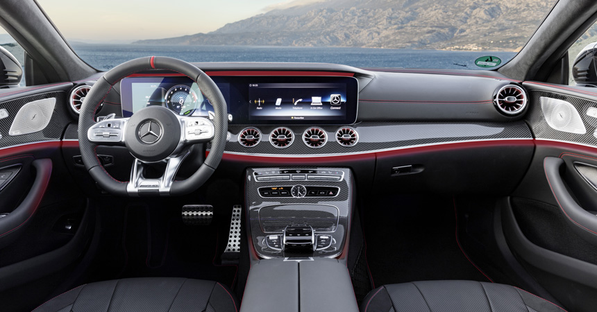
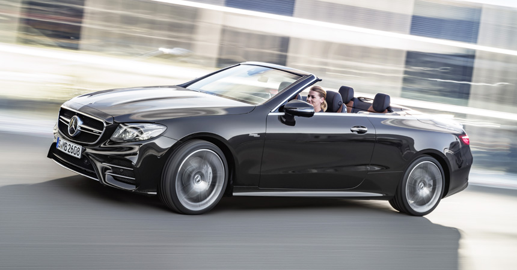

До сих пор у Мерседесов классической компоновки были две основные AMG-версии с индексами 43 и 63, а теперь появился еще один «промежуточный» вариант. Индекс 53 дебютировал сразу на трех родственных моделях — это седан Mercedes-AMG CLS 53, а также купе и кабриолет Mercedes-AMG E 53. И если у модели CLS прежде уже были «заряженные» версии, то двухдверки E-класса впервые обзавелись полноценными модификациями AMG.
Технически все три машины одинаковы. Они оснащены трехлитровой рядной «шестеркой» M256 нового поколения, которая имеет турбокомпрессор и электрический нагнетатель, призванный ликвидировать турбояму. Отдача двигателя — 435 л.с. и 520 Нм. А еще один обязательный атрибут нового силового агрегата — гибридная система EQ Boost, которая представляет собой расположенный на «хвосте» коленвала стартер-генератор, работающий от 48-вольтовой электросистемы. Моторчик выдает 22 л.с. и 250 Нм, помогает в первые секунды разгона, а также может глушить и быстро запускать бензиновый двигатель во время движения.
Кстати, 48-вольтовая электросистема, по сути, основная: с таким напряжением работают аккумулятор и навесное оборудование, а трансформатор на 12 вольт нужен для светотехники и бортовой электроники.
